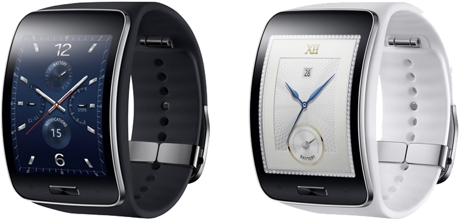

삼성 기어 S
1. 외관

삼성전자가 2014년 8월에 공개한 타이젠 스마트 워치.
2. 사양
| 프로세서 | 삼성 엑시노스 3250 SoC. ARM Cortex-A7 MP2 1 GHz CPU, ARM Mali-400 MP- -- MHz GPU | ||
| 메모리 | 512 MB LPDDR2 SDRAM, 4 GB 내장 메모리 | ||
| 디스플레이 |
2.0인치 480 x 360 서브픽셀 방식의 삼성D Curved Super AMOLED 정전식 터치 스크린 |
||
| 네트워크 | 기본 | HSDPA & HSUPA & UMTS, GSM & EDGE | Wi-Fi 802.11b/g/n, 블루투스 4.1 |
| - | - | ||
| 카메라 | 없음 | ||
| 배터리 | 내장형 Li-Ion 300 mAh / 평균 사용 시간 2일 | ||
| 운영체제 | 타이젠 기반 웨어러블 커스텀 OS | ||
| 규격 | 58.3 x 39.8 x 12.5 mm, 66 g (블루 블랙) / 84 g (펄 화이트) | ||
3. 상세
삼성전자가 sim 카드 슬롯을 만들어 스마트폰과 연동 없이 통화 기능을 수행하는 (가칭) '기어 솔로' 의 실체로 보여진다.
전반적인 사양은 삼성 기어 2 Neo와 큰 차이가 없다. 삼성 엑시노스 3250 AP, 카메라 미 탑재, 300 mAh의 배터리 등 지금까지 삼성전자의 스마트 워치와 큰 차이를 보이지 않는다.
다만, 3G WCDMA와 2G GSM에 대응하는 통신 모뎀을 내장해 단독으로 음성 통화를 수행할 수 있다. 또한, Wi-Fi도 잡는다.